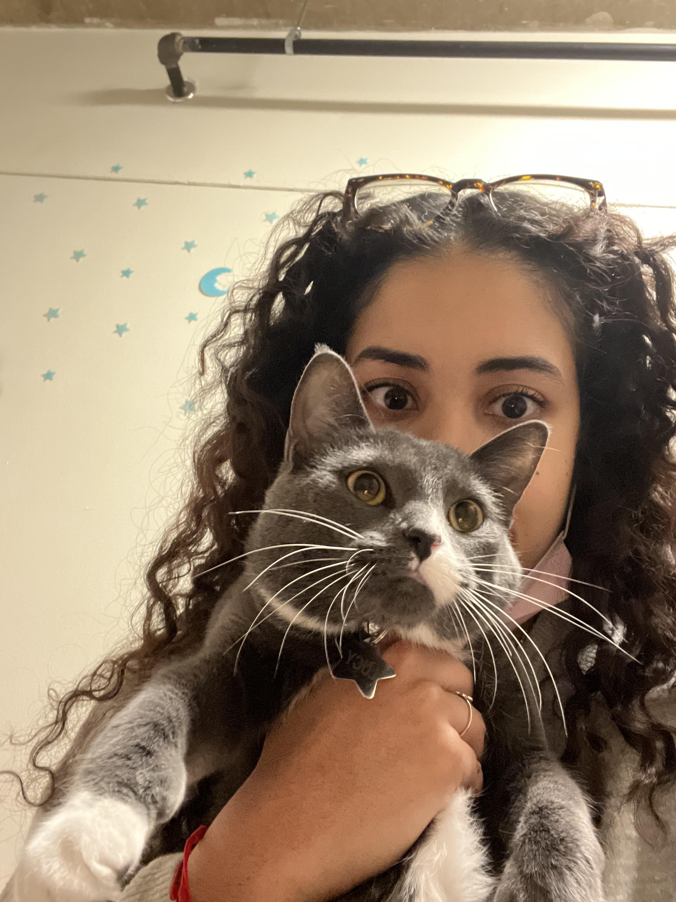

Just a photo of the two most giving people to ever exist. I can't wait to pop our pussys agian
and just have a good timeeeee. Im just so proud of you for getting your finals done and just being the
smarty pants that you are. I want to tell you this, It doesnt matter what people are doing now, it doesnt
matter what people say they're going to do. At the end of the day all you can do is look at their past and see
how they are now, if the change is drastic and negative and you don't talk to them, you made the right choice. Even
if the chnage was postiving it doesnt mean youve made a bad choice. Somebody always bing honest and loyal is very
hard to find, its one of the reasons you're one of the most important people to me because you're always honest and
I know youre going to be real with me. People do wild shit but at the end of the day all that matters is that you
stick to the choice you made, fuck whatever somebody is doing because most likely they're doing it because they have
no other choice. When I cut somebody off, if I see them or hear something about them I compare it to the version of
them I knew, and if I see a drastic negative chnage it just proves my point for me. You're better than this friend
and its their loss when they decided to become a different person because they lost an amazing person, they just didn't
realize it and thats on them. You deserve nothing but the best and know that. I hope you have a great PUSSY POPPING day girly
and if you need anything im right here.
Love Your Girly Pop!!!
Edwardo 💗
